Public betaOpen source
nöbet · your servers' night watch
A small terminal app that checks the security of your Linux servers over SSH. It's a lighter alternative to Wazuh or OpenSCAP for teams with fewer than 50 servers.
- SSH and sudo permissions, open ports, critical updates, user access
- Scan the local host, or many servers at once over SSH
- No agents to install on your servers